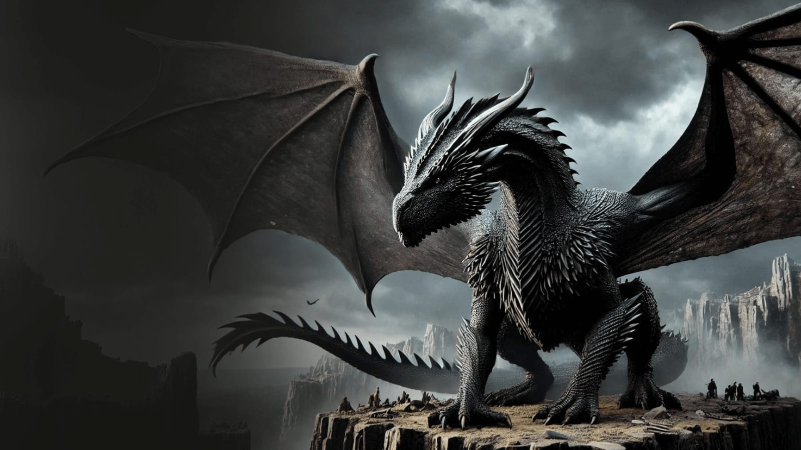
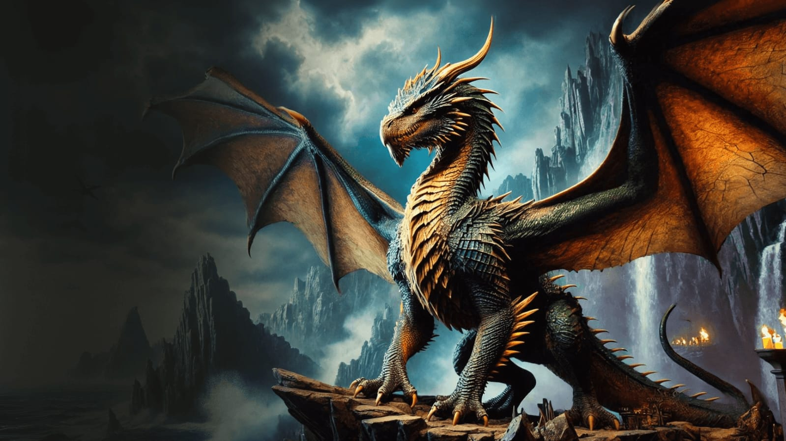

Balerion
Balerion,chamado de Terror Negro, foi um dragão da casa de Targaryen. Ele foi montado pelo rei Targaryen durante a Guerra da Conquista.
Syrax
Syrax, foi um dragão-fêmea. Ela foi montada exclusivamente por Rhaenyra Targaryen.
Caraxes
Caraxes, também chamado de Wyrm de Sangue e Verme Sangrento, foi montado pelo príncipe Aemon Targaryen.